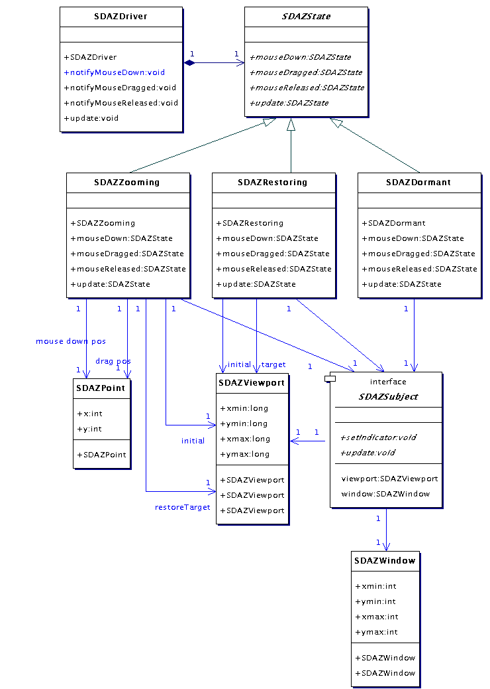
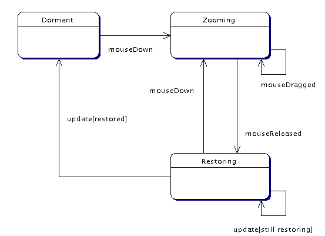

VGLViewer

Implementation
sdaz |
Package sdaz|
Package sdaz implements no-frills, speed-dependent automatic zooming (SDAZ) navigation of documents. Classes in this package are shown below.
|
|
SDAZSubject defines the contract for a zoomable document view. This interface defines methods
|
- getViewport and setViewport, to access the current document view's viewport,
- getWindow and setWindow, to access physical device window to which the viewport maps
- setIndicator, to update a graphical device to indicate the state of zooming in the document view, and
- update, to cue the document view to render the next frame.
|
|
A SDAZDriver controls a SDAZSubject. This class has methods
|
- notifyMouseDown, notifyMouseDragged and notifyMouseReleased notify it when the mouse is dragged, down or released, respectively, and
- update, to cue the driver to continue with whatever it's doing for the next frame.
|

Figure 4. Classes implementing speed-dependent automatic zooming
|
A SDAZDriver has three states:
|
- Dormant, in which it is waiting for mouse down notification,
- Zooming, in which it is zooming the SDAZSubject viewport and zoom indicator to effect zooming, and
- Restoring, in which it is restoring the viewport to it's original size, at the center of it's current location.
|
|
These states are shown in this state diagram, which shows the mouse events which cause transitions:
|

Figure 5. SDAZ States
|
SDAZState declares an abstract base class common to these states. These states are implemented by SDAZDormant, SDAZZooming and SDAZRestoring. A SDAZDriver maintains an instance of one of these subclasses at any given time to represent the current state of zooming and delegates all directions to it. The subclasses themselves are responsible for for returing an instance of the subclass corresponding to the next state after a transition. For example, the mouseDown method of SDAZDormant will return an instance of SDAZZooming. The mouseReleased method of SDAZZooming will return an instance of SDAZRestoring.
|
|
Let's take a closer look at the behaviour of SDAZDriver. Starting out in the Dormant state, it has an instance of SDAZDormant. If we call its mouseDown method, it delegates the request to SDAZDormant, which returns a fresh SDAZZooming, initialised with the SDAZDrivers SDAZSubject and the position of the mouse. On initialisation, SDAZZooming records the current SDAZViewport of the SDAZSubject (labelled 'initial' in the class diagram) and awaits directions. If we then call SDAZDrivers mouseDragged method, it delegates the request to the SDAZZooming, which then records the mouse drag offset and calls its update method and returns the result. The update method computes a new SDAZViewport for the SDAZSubject, the size of which is proportional to the mouse drag offset. The update method also calls the SDAZSubjects setIndicator method with new SDAZ indicator parameters, and calculates a new SDAZViewport to restore the SDAZSubject to when zooming stops (labelled 'restore target' in the class diagram).
|
|
Zooming stops when we then call SDAZDrivers mouseReleased method. SDAZDriver delegates this to the SDAZZooming mouseReleased method, which then returns a fresh instance of SDAZRestoring. The SDAZRestoring is initialised with the SDAZSubject, the current SDAZViewport of the SDAZSubject ('initial'), and the SDAZViewport to restore the SDAZSubject to ('target'). The job of the SDAZRestoring is to interpolate the SDAZSubjects SDAZViewport, incrementally with each call to its update method, from the 'initial' to the 'target' viewport, while at the same time updating the SDAZSubjects SDAZ indicator. While it is interpolating, the update method will return a reference to the SDAZRestoring, but when it it is finished, a call to this method will obtain a fresh SDAZDormant.
|
Future Work|
SDAZDriver implements straight-forward no-frills SDAZ. Further work could include
|
- the ability to transition back to Zooming at any instant while Restoring,
- a threshold mouse drag rate above which SDAZ kicks in,
- a delay after a change of drag direction before which SDAZ changes the zoom level, to alleviate the disorientating, fast zoom-in-zoom-out that results,
- the ability to configure parameters such as these.
|
|